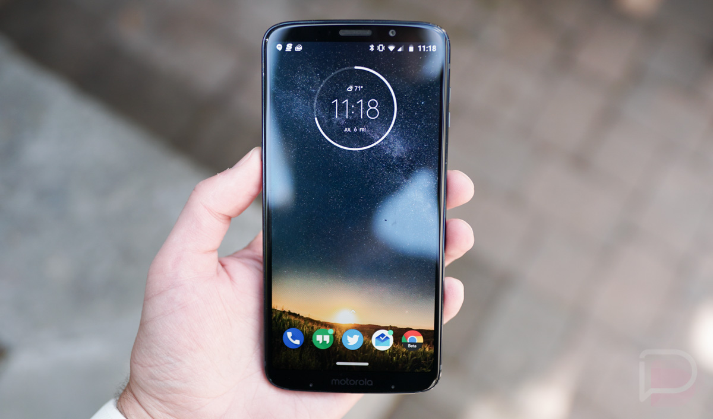
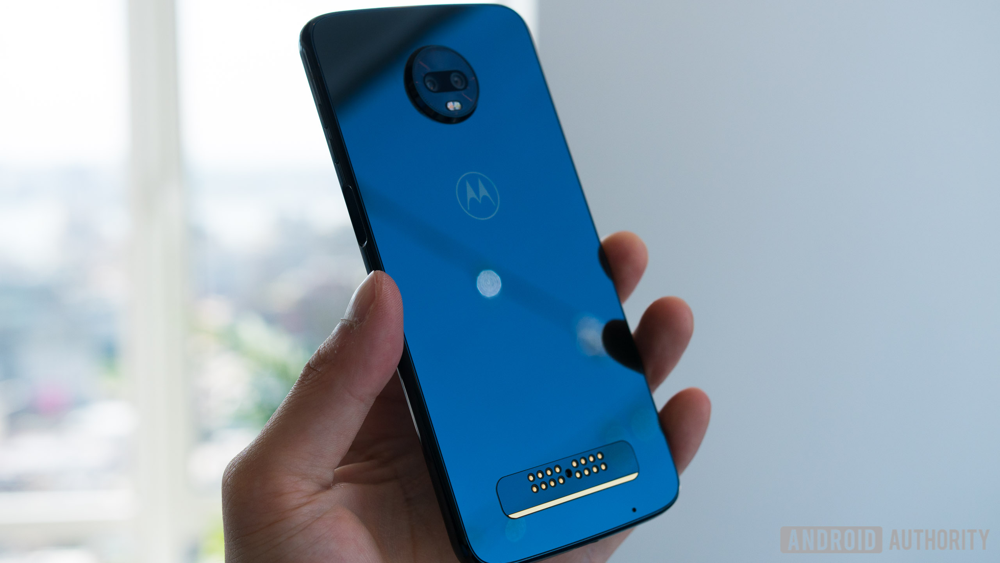
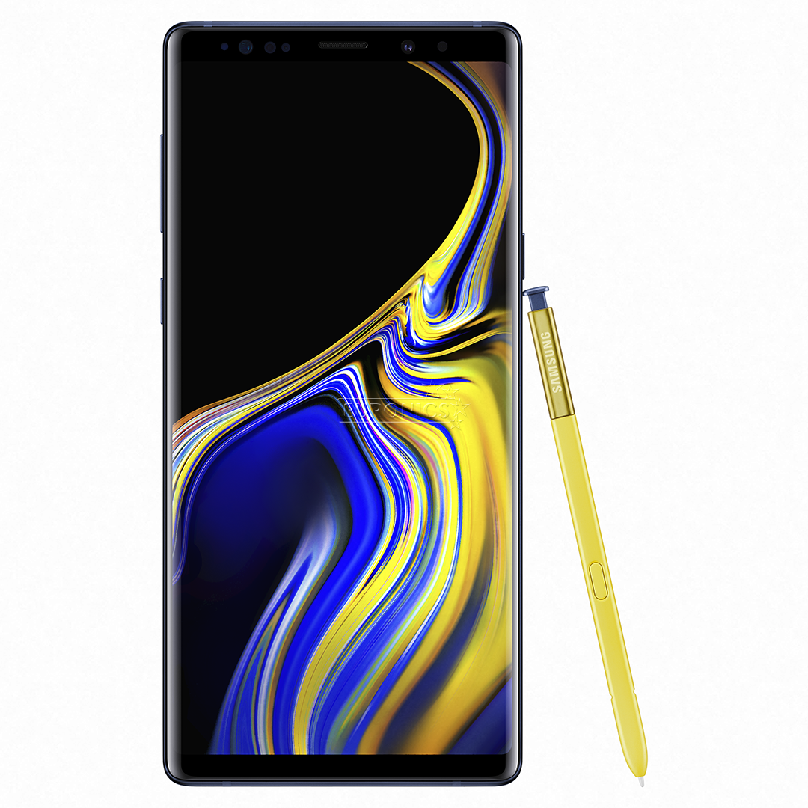
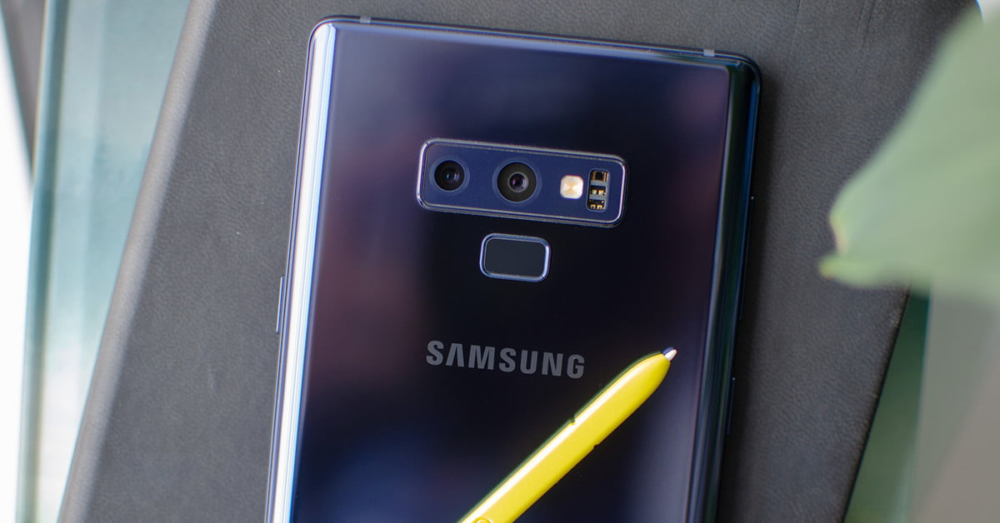
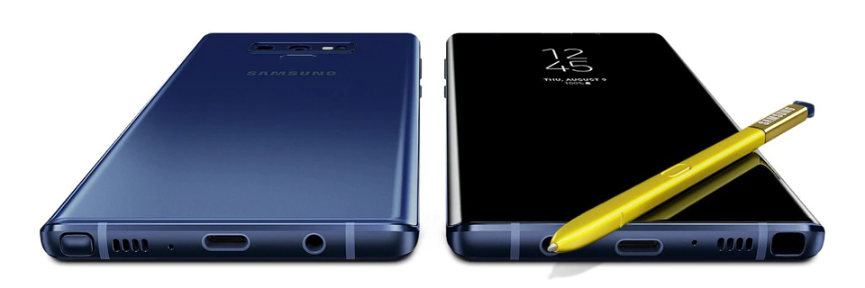
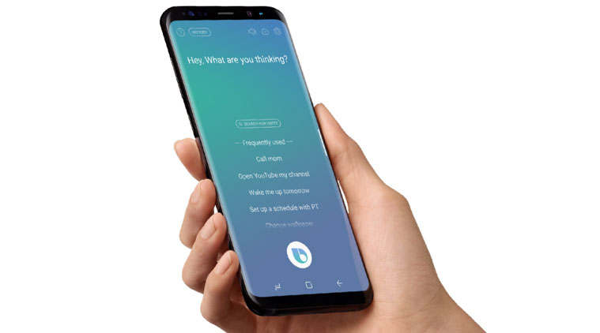
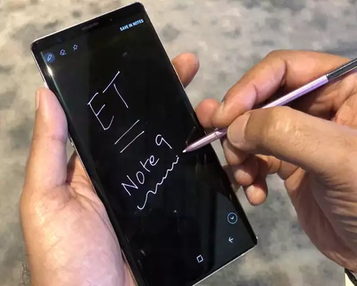

Atualizado em 05/Outubro/2018 Review Moto Z3 Play Moto Z3 Play promete bom desempenho e bateria para um dia inteiro, mas peca pelo leitor de impressões digitais na lateral e resistência. Fino, elegante e rápido: essas três palavras descrevem bem o Moto Z3 Play. Com lançamento em junho de 2018, o celular Motorola repete a receita da geração anterior, como a ficha técnica intermediária e o suporte aos Moto Snaps, mas traz novidades, como a tela maior, de 6 polegadas, câmera dupla e o armazenamento de 64 GB ou 128 GB, a depender do modelo escolhido. Nas linhas a seguir, você descobrirá se vale a pena comprar o modelo anunciado pelo preço sugerido de R$ 2.299, mas já é encontrado mais barato, a partir de R$ R$ 1.899 no comércio eletrônico. O sucessor do Moto Z2 Play promete bom desempenho e bateria que dura um dia de trabalho inteiro, mas peca quanto à resistência da tela e das bordas e ao leitor de impressões na lateral. Todos os detalhes estão neste review.  Moto z3 play Velocidade e muito espaço À primeira vista, o Moto Z3 Play chama a atenção pelo desempenho. Sem travamento algum, o smartphone rodou com bastante velocidade e experiência fluida aplicativos populares, como WhatsApp, Facebook, Messenger, Telegram, Instagram, Evernote, Gmail e Todoist. Isto acontece graças à ficha técnica intermediária, com o processador Snapdragon 636 e memória RAM de 4 GB. O mesmo pode ser dito de jogos. Títulos como PUBG e Angry Birds funcionaram adequadamente, mesmo quando os momentos de jogatina eram interrompidos para responder uma mensagem ou verificar notificações. Armazenamento é outro ponto forte para aqueles que gostam de guardar fotos, músicas e vídeos, entre outros. O celular tem memória interna de 64 GB, mas somente 50,2 GB são liberados para o usuário. Caso precise de mais espaço, sem problemas: há entrada para cartão de memória microSD. Vale lembrar que a Motorola também comercializa uma versão turbinada do Moto Z3 Play com memória RAM de 6 GB e armazenamento de 128 GB. No TechTudo, testamos a edição com 4 GB e 64 GB. Os preços, vale lembrar, são diferentes. Câmera dupla de 12 e 5 megapixels Sem muitas surpresas, o Moto Z3 Play traz uma câmera de 12 megapixels. Em dias claros e com boa iluminação, o celular é capaz de tirar fotos com cores fortes e bastante contraste. Mas não espere resultados impressionantes. Moto z3 play Uma das principais novidades da geração de 2018 é a câmera dupla, antes presente apenas no Moto Z2 Force e Moto X4. Diferentemente de concorrentes como o Zenfone 5, o sensor secundário de 5 megapixels (abertura de f/2.2) não pode ser utilizado separadamente e serve apenas para auxiliar no famoso efeito bokeh – também conhecido como Modo Retrato –, que desfoca o fundo e deixa a pessoa em primeiro plano. Embora com algumas falhas pontuais, o recurso é muito bem-vindo e ideal para quem deseja destacar diversas situações com ou sem pessoas. Quer mostrar mostrar o seu novo corte de cabelo? Que tal enviar uma foto dos seus filhos para o grupo da família no WhatsApp? Este efeito é para você. O resultado é apenas razoável quando cai a noite e a iluminação tende a ser menor. As imagens não perdem as cores e a lente com abertura de f/1.7 ajuda bastante. Ainda assim, em alguns momentos, o smartphone não escapa de uma granulação incômoda quando a luz está um pouco mais fraca. Para selfies, o celular também promete não decepcionar, com 8 megapixels (f/2.0). O revés está pela remoção do flash na câmera frontal, recurso disponível no Moto Z2 Play e que vai fazer falta em festas noturnas ou lugares escuros. Bateria para o dia inteiro O Moto Z3 Play promete bateria para um dia inteiro de trabalho. Em momentos de uso moderado, o componente de 3.000 mAh chegou a durar mais de um dia. O smartphone da Motorola também conta com o TurboPower, que promete recarga rápida aos celulares compatíveis da marca. Em uma hora e quarenta minutos, a bateria alcançou 100% da capacidade. Fino, elegante e… frágil O Moto Z3 Play repete a receita das gerações anteriores, sendo um dos smartphones mais finos do mercado, e segue a tendência da Motorola em 2018, com a tela em formato 18:9 e bordas finas, combinação que traz uma forte elegância ao visual do celular. Além disso, tanto a parte frontal quanto a traseira são revestidas em vidro. Chama atenção a fragilidade da tela, mesmo com presença da proteção Gorilla Glass. Sem nenhuma queda, no segundo dia de uso, o display já apresentava alguns arranhões aparentes. Esse problema também é encontrado nas bordas, que ficaram marcadas e esbranquiçadas. Ou seja, película e capinha são indispensáveis.  Moto Z3 Play A única diferença entre a traseira do Moto Z2 Play e a do Moto Z3 Play está no vidro, pois o conjunto de sensores fica centralizado na parte superior e os conectores dos Moto Snaps permanecem na parte inferior. Na frente do modelo estão a tela, a câmera e os sensores, uma vez que o leitor de impressões digitais foi movido para a lateral do celular, tal qual acontece em alguns celulares da Sony e no Galaxy A7 (2018). A tela repete o sucesso do Moto G6, com 6 polegadas, resolução Full HD+ (2160 x 1080 pixels), cantos curvos e ótimo aproveitamento do espaço frontal. As cores são vivas e o display possui bom contraste para assistir a filmes e vídeos. Também, bastante confortável para leitura. O celular está disponível nas cores índigo (64 GB) e ônix (128 GB) Android O, Moto Snaps e demais recursos O Moto Z3 Play sai de fábrica com Android O (8.1) sem muitas modificações no sistema. Quanto à atualização para o Android P (9), uma boa notícia: a Motorola confirmou o update para os próximos meses. A nova versão traz mais privacidade e o Digital Wellbeing, que promete uso mais consciente do celular no dia a dia. Os Moto Snaps não ficaram de fora e os acessórios já lançados são compatíveis com a nova geração. Durante a análise, utilizamos o Moto Snap Polaroid Insta-Share. A "capinha" funcionou normalmente, sem diferenças de usabilidade e performance se comparado com os testes feitos com o Moto Z2 Force. Assim, além da impressora de fotos, é possível explorar diversas funções extras com o recurso. Entre eles estão o Moto Snap Stereo Speaker, que transforma o celular em uma caixa de som, o Moto Power Pack & TV Digital, que acopla uma antena de televisão no smartphone, e o Moto Snap Gamepad, que adiciona controles de videogame no telefone. O leitor de impressões digitais mudou de lugar e agora está posicionado na lateral direita, o que atrapalha bastante o uso. Vira e mexe, o celular é desbloqueado repentinamente ao pegá-lo somente para ver as horas ou colocá-lo no bolso. Além disso, o sensor fica sujo à toa e é difícil de ser operado por uma pessoa canhota. A navegação por gestos também não agradou bastante. Embora a Motorola tenha adaptado o OneNav para funcionar na tela do smartphone, o recurso falhou inúmeras vezes quando o teclado do celular estava aberto. Resumo da ópera: era melhor repetir o que foi feito no Moto G6 Plus e manter o sensor abaixo da tela, como sempre foi. Por fim, as ferramentas exclusivas permanecem as mesmas de outros celulares da Motorola, com Tela Alerta e gestos para abrir a câmera ou ligar a lanterna. O celular também conta com reconhecimento facial como biometria. Acessórios Diferentemente da geração anterior, o Moto Z3 Play não tem entrada para fones de ouvido. Isso significa que o smartphone requer o uso de adaptadores ou fones Bluetooth. Felizmente, o acessório acompanha o celular na caixa, junto de um fone de ouvido intra-auricular com cabo flat, bons médios e agudos moderados. Também estão presentes na caixa: cabo USB-C, carregador TurboPower e alfinete metálico para ejeção de SIM card (chip) e cartão de memória. Vale a pena comprar o Moto Z3 Play? O Moto Z3 Play é um smartphone para quem se interessa pelo Android puro e não abre mão do bom desempenho. Além disso, ele conta com o suporte aos Moto Snaps, que permite adicionar mais recursos com acessórios que se encaixam na traseira do celular. O recurso é interessante e torna o dispositivo adequado a diversos tipos de perfis, até mesmo para gamers. A bateria é outro ponto a se observar, assim como a câmera dupla, para quem gosta de fotografia. O celular, no entanto, peca quanto ao material utilizado, que se mostrou frágil ainda na primeira semana de uso, e o leitor de impressões digitais na lateral é um divisor de água – especialmente para canhotos Os preços também podem gerar opiniões múltiplas. O Moto Z3 Play com memória RAM de 4 GB e 64 GB foi lançado no Brasil por R$ 2.299 e atualmente sai a R$ R$ 1.899 no comércio eletrônico. Já a edição turbinada, com 6 GB e 128 GB, chegou por R$ 2.699, e já é visto por R$ 2.500 em lojas online. Vale lembrar que o smartphone também é vendido em kits que combinam o aparelho em si e algum Moto Snap – Moto Power Pack & TV Digital, Gamepad, Moto Snap Stereo Speaker, Moto Snap Projector Edition e Moto Snap Style Edition. Os preços começam em R$ 2.599 na loja da Motorola. NOTA: 8.2 Review Galaxy Note 9 “Quero um celular que não me traga preocupações com relação à bateria.” Faz tempo que ouço esse pedido de quem quer comprar um novo smartphone. Justamente com a proposta de longa autonomia de uso, a Samsung traz para o Brasil o Galaxy Note 9. O lançamento de 2018 tem preço sugerido a partir de R$ 5.499, com direito ao processador Snapdragon 845 e à caneta digital S Pen na ficha técnica. O telefone chega às lojas e, com ele, a dúvida: vale a pena comprar o sucessor do Galaxy Note 8? Você descobrirá nas linhas a seguir.  Note 9 Bateria de sobra Se a bateria do Galaxy Note 7 se tornou um case de como não conduzir a fabricação de um celular, agora podemos dizer que os sul-coreanos acertaram em cheio: o Galaxy Note 9 traz bateria de 4.000 mAh, com potência 21% superior à geração anterior. O modelo deste ano não decepciona quando o usuário mais precisa do telefone: após horas e horas longe da tomada. Em nosso experimento, o Note 9 ficou até 22 horas funcionando continuamente, num teste que inclui uso de redes sociais e aplicativo de e-mail, streaming de vídeo por uma hora (com brilho da tela em 75%) e transmissão de música online. Eu despluguei o celular da tomada às oito da manhã. Ele começou a reclamar e entrou em modo de economia de energia às onze da noite. Só foi desligar por completo no dia seguinte, às seis da manhã, quando eu acordava de um bom sono. Claro que não existe teste definitivo de bateria, mas a descrição acima tem tudo para ser mais exigente do que o uso cotidiano de muitas pessoas – que normalmente ficam em aplicativos de mensagem, música e câmera. Ou seja, pode ser que o novo Galaxy ultrapasse a barreira das 24 horas ligado, a depender do perfil de utilização. Comigo foi comum chegar em casa com 30%, 25% de bateria restantes nos dias menos movimentados. A questão da energia disponível deixou de ser uma preocupação. Se o seu atual telefone te obriga a andar com um carregador a tiracolo, este dispositivo pode ser o derradeiro substituto.  Note 9 Mais que uma stylus Um dos trechos mais marcantes do lançamento do iPhone, lá em 2007, traz Steve Jobs fazendo chacota da caneta eletrônica necessária para acionar as telas dos supostamente telefones inteligentes da época. Pois bem, a Samsung aposta nesta tecnologia desde o início da linha Galaxy Note, trazendo interessantes possibilidades para os entusiastas da marca. Desde sempre é possível fazer anotações manuscritas, como se fosse um caderno. Um colega chegou a me confidenciar que gosta da canetinha para ficar no celular durante as reuniões, visto que os demais participantes do compromisso não veem problema em rabiscar no dispositivo (ao contrário de digitar na telinha, uma falta grave em muitas corporações).  Note 9 A seleção inteligente reconhece palavras do que é exibido no display e possibilita copiar a informação, bem como colá-la em outro aplicativo. Já a tradução rápida acaba com a barreira do idioma ao acessar páginas de origem desconhecida. Nenhum dos recursos que cito acima é novo, embora todos sejam bem-vindos de se ter em um smartphone voltado para trabalho e produtividade. Com o Galaxy Note 9, a Samsung vai além: transforma a caneta S Pen num controle remoto. Uma vez fora do compartimento secreto, ela se comunica com o telefone por meio do Bluetooth e envia comandos para os mais variados aplicativos.  Note 9 O Spotify possibilita pausar com um toque no botão da S Pen ou pular para a música seguinte com toque duplo. Comportamento similar faz o YouTube passar para o próximo vídeo. Utiliza PowerPoint no ambiente de trabalho? Mesma coisa. Agora, no meu uso particular, o destaque é o controle remoto no aplicativo oficial de câmera. Em primeiro lugar, é muito divertido estender o Note 9 para bater uma selfie e, na sequência, entregar a canetinha para que a outra pessoa acione o obturador. Excelente forma de quebrar o gelo! Segundo lugar: não há mais aquela necessidade de segurar o celular e tocar no botão de disparo ao mesmo tempo. Não sei contigo, mas comigo, às vezes, a foto saia tremida por causa deste movimento. A Samsung acertou em cheio ao adicionar comunicação sem fio à S Pen. Mesmo quem não a utiliza para rabiscar diariamente se lembra de que é possível inovar no mundo dos celulares e também de que pequenos detalhes importam. Recursos de controle remoto dependem de energia. De acordo com a Samsung, o botão físico da S Pen possibilita 200 cliques seguidos. Acabou a bateria? É só recolocar o apetrecho no compartimento e esperar 40 segundos.  Note 9 Desempenho de ponta Antes de seguir com esta análise, é importante que você entenda que há variantes do Note 9 com dois processadores distintos: Snapdragon ou Exynos. Chega ao Brasil o smartphone com a primeira opção. Já este review leva em consideração o segundo chip, uma vez que era o único disponível quando o telefone foi lançado nos Estados Unidos. Posso lhe assegurar que a experiência de uso foi a melhor possível. O sucessor do Note 8 é extremamente veloz, executa os comandos muito rapidamente e raramente passa por engasgos. Fez bonito até mesmo em condições extremas, como o modo multitarefa que divide a tela com dois aplicativos rodando simultaneamente. Os representantes da Samsung Brasil são categóricos em afirmar que a performance é similar nos dois chips. Caso a informação se confirme, não há restrições em adotar o Snapdragon 845, com direito a 8 núcleos e velocidade máxima de 2,4 GHz. Não existe processador mais eficiente na indústria, ao menos enquanto escrevo este texto. De quebra, os brasileiros podem ficar despreocupados com relação à conexão 4G porque o componente fabricado pela Qualcomm funciona melhor na nossa rede de telefonia. Os usuários ávidos por ainda mais desempenho também contam com a edição parruda que traz memória RAM de 8 GB e armazenamento de 512 GB. Tudo me leva a crer que terá velocidade estelar, muito bem-vinda para quem depende de aplicações pesadas e simultâneas. Não por acaso, tem preço ainda maior: R$ 6.499. Tela deslumbrante Reza a lenda que os celulares com tela grande caíram no gosto de parcela dos consumidores. Essa tem sido uma característica da linha Note que se renova com o produto mais recente: o Note 9 emprega display de 6,4 polegadas. Ele cresceu em relação ao modelo de 2017 com suas 6,3 polegadas. Também ficou mais alongado. O painel Super AMOLED garante cores muito vivas e a típica saturação vista em telefones da Samsung. Não tenho queixas quanto à qualidade da imagem. Enquanto o mercado se movimenta para uma realidade de muitos topetes, os sul-coreanos insistem num smartphone sem notch. Em vez disso, ele traz bordas superior e inferior que não chegam a me incomodar, mas certamente se tornam uma questão para quem abomina espaços pretos na frente do dispositivo. A tela curva continua sendo uma marca registrada dos celulares mais sofisticados da Samsung. Nenhum outro ator relevante no mercado brasileiro oferece algo similar. Com isso, a pegada do smartphone fica melhor. Já os cantos arredondados da tela são deveras charmosos (apesar de não haver novidade alguma nisso, considerando-se que estamos em pleno 2018). Câmera dupla com abertura variável O Galaxy S9 Plus chegou ao mercado no primeiro semestre e logo recebeu uma avaliação extremamente positiva no quesito fotografia. Agora considere que os engenheiros pegaram a mesma tecnologia e puseram no Galaxy Note 9: o resultado são fotos sensacionais tanto em ambientes com alta incidência de luz quanto em condições de baixa luminosidade. Seja na praia ou na balada, estes telefones são a opção mais prática para quem não quer se preocupar com ajustes manuais e com a possibilidade de a foto sair aquém do esperado. A câmera traseira registra imagens em 12 megapixels, com excelente nível de detalhes e alcance dinâmico particularmente interessante sob a luz do sol. Há o benefício da abertura variável, que se comporta como o olho humano e se ajusta às condições de luz. Nenhuma outra fabricante traz a tecnologia. Há estabilização de imagem (OIS) nas duas lentes/sensores e zoom óptico de 2x. O foco dinâmico faz o mesmo que o modo retrato do iPhone: deixa o fundo desfocado e destaca o personagem da foto. Não é sempre que o recurso funciona conforme o esperado, então é sempre bom checar se o resultado final deu certo. Caso não dê, a Samsung tem a vantagem de ajustar a intensidade do efeito depois que a foto foi salva. Quem teve contato com celular Samsung nos últimos anos percebeu que às vezes surge o aviso de que a lente está suja. Dando um passo à frente, o Galaxy Note 9 informa quando a imagem fica tremida e quando alguma pessoa pisca bem no momento da foto. Também há inteligência artificial para automaticamente melhorar as fotografias em variadas situações, como reuniões em família, bichos de estimação, paisagens e alimentos. No entanto, o recurso mostrou pouca ou quase nenhuma melhoria nas comparações que fiz – com isso, temos fotos fiéis às cores, às texturas e aos detalhes. Enquanto isso, a câmera frontal faz selfies de 8 megapixels. Também tem foco dinâmico, porém sem utilizar hardware para isso, mas sim inteligência artificial. Os resultados variam de excelentes a apenas okay. De toda forma, é interessante a adição de mais esta possibilidade. Aqui convém lembrar para desativar o modo embelezamento que deixa as pessoas como se fossem bonecos de cera. Android com Samsung Experience O Note 9 sai de fábrica com Android O (8.1). Todo o visual foi trocado pelo padrão da Samsung, muito elegante e de fácil utilização. Repare que a fabricante sumiu com a fantasmagórica marca TouchWiz depois de anos trabalhando para tornar sua camada de software eficiente e repleta de recursos adicionais. Por exemplo, a funcionalidade de Par de Apps executa combinações de aplicativos simultaneamente – eles são exibidos lado a lado, tirando proveito da enorme tela. A Pasta Segura armazena documentos com direito a criptografia e a carteira digital Samsung Pay te deixa pagar as compras do dia a dia com o telefone. Sem falar no Always On Display e nas possibilidades da S Pen (como escrever uma mensagem e mandar para um amigo). A bola fora fica por conta da assistente virtual Bixby. Ela é basicamente inútil. A central de tarefas exibe informações que são mais fáceis de serem consultadas nos aplicativos de agenda e de anotações, por exemplo. Para completar, o equivalente à Siri, com compreensão da fala humana, não funciona em português, mesmo tendo se passado dois anos desde que a tecnologia foi introduzida. Precisamos falar de ergonomia Seria impossível colocar uma bateria tão poderosa sem mexer nas dimensões do celular. O Note 9 ficou mais espesso e também está mais pesado. De acordo com a ficha técnica, ele pesa 201 gramas, contra 195 gramas do Note 8 e 174 do iPhone X. Na prática, ficou mais difícil de sustentar o telefone nas mãos por muito tempo, a menos que o seu treino funcional na academia contemple levantamento de dispositivos móveis. O cansaço chega mais rápido e o trambolho também requer bolsos generosos. Também tem a questão da digitação. Devido à telona, está mais complicado de digitar com apenas uma das mãos. O ideal é usar os dois polegares. Ainda assim, quem tem mãos pequenas pode se sentir incomodado com a nova realidade.